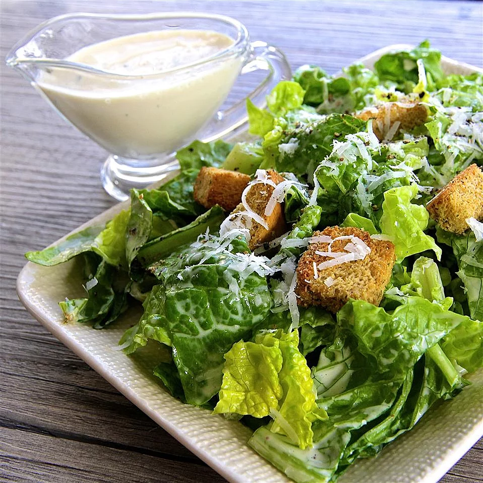

Caesar Salad Dressing

Description
I have been working with chefs for years and found out how to make the best Caesar dressing.
I thought I would share!
Ingredients
- 1 cup mayonnaise
- ¼ cup egg substitute
- ¼ cup freshly grated Parmesan cheese
- 2 tablespoons water
- 3 cloves garlic, finely chopped
- 1 ½ tablespoons lemon juice
- 1 tablespoon anchovy paste
- 2 teaspoons white sugar
- ½ teaspoon dried parsley
- salt and ground black pepper to taste
Steps
- Blend mayonnaise, egg substitute, Parmesan cheese, water, garlic, lemon juice, anchovy paste, sugar, parsley, salt, and pepper in a blender until smooth, about 1 minute.
- Transfer dressing to an airtight container and refrigerate 8 hours to overnight.